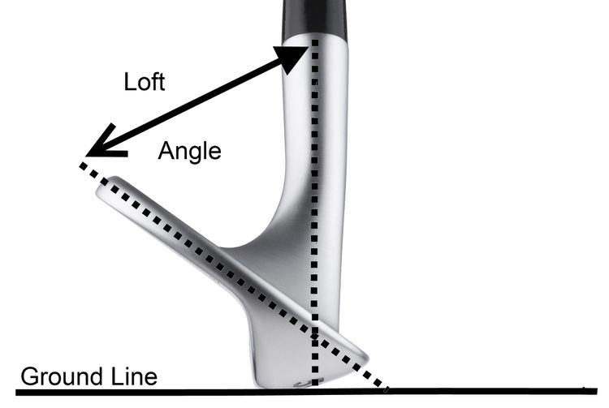
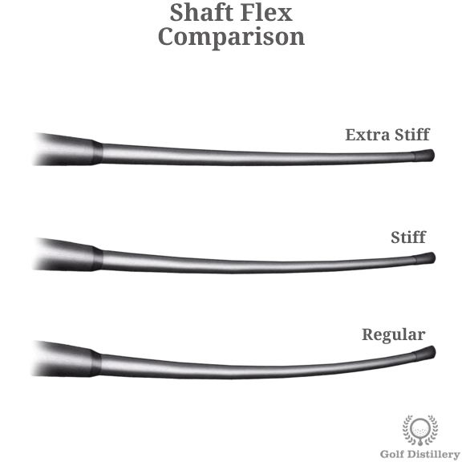
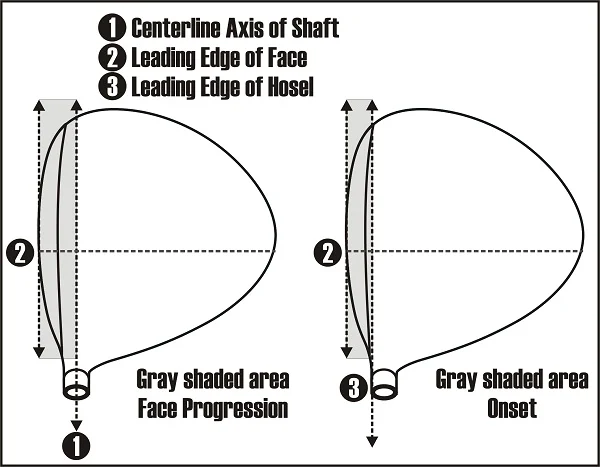
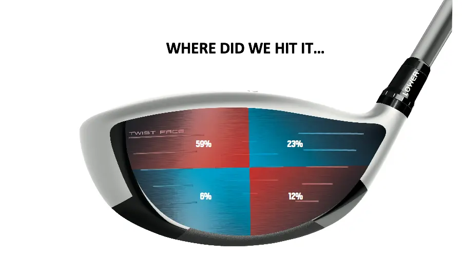

Loft
Most drivers range from about 8° to 12° of loft. Higher loft can help the ball launch higher and add more carry distance for many amateur golfers, especially if their swing speed is not very high.
The driver is the longest club in the bag and is usually used on par-4 and par-5 holes. It is designed to help you hit the ball as far as possible from the tee while still keeping it in play. This page introduces what a driver does and explains some basic specifications that can help you choose the right model.
A driver has the lowest loft and the largest clubhead in a typical golf set. It is meant to launch the ball high with low spin so that it can travel a long distance down the fairway. Because the shaft is longer, the driver can also be the most challenging club to control.
For most golfers, a good driver does three things:
Several basic specs define how a driver will perform. Understanding these can help you choose a driver that matches your swing and your goals on the course.

Most drivers range from about 8° to 12° of loft. Higher loft can help the ball launch higher and add more carry distance for many amateur golfers, especially if their swing speed is not very high.

Shaft flex describes how much the shaft bends during the swing. Common flexes include Regular, Stiff, and Senior. Matching shaft flex to your swing speed can improve consistency and help you control the ball.

Modern drivers are usually close to 460cc in head size, which is the maximum allowed in most rules of golf. Larger heads tend to be more forgiving, while compact shapes may offer more workability for advanced players.

Many drivers use variable face thickness, special face materials, or unique milling patterns to help keep ball speed high, even on off-center hits. This is one of the key reasons modern drivers feel so forgiving.
A professional fitting is always the best option, but even simple checks can make your driver easier to hit:
Once your driver is reasonably fit to your swing, practice is the most important step. A consistent setup and tempo will help you get the most from any driver.